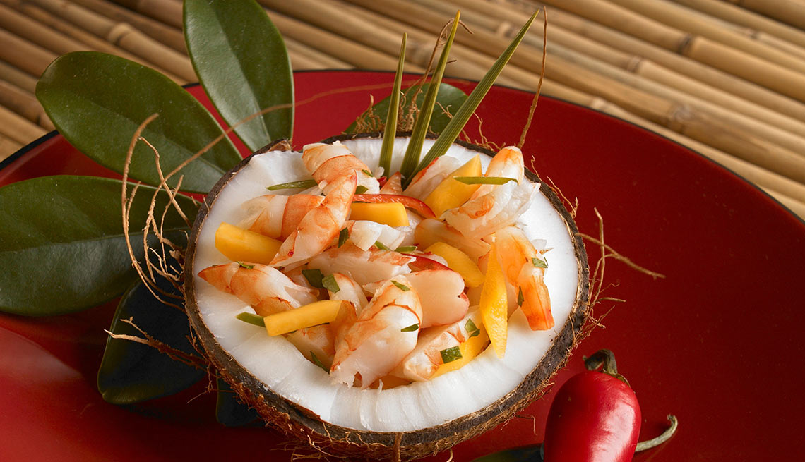

Coconut Ceviche
A fresh recepi, ideal for beach days and big groups, might be expensive or cheap depending on the kind of fish you want to use,
its a versatile recepie because you can change the veggies as well as the fish.
I encourage you to experiment with it until you find the version that works best for you. But for now, try mine.

Ingredients:
- Fish: the kind you want, the amount varies
- A lot of natural lime juice, enough to cover the fish when chopped
- coconut milk
- red onion
- scallion
- 2 sweet oranges
- Avocado
- Salt and sugar
- parsley
Step by step:
- Chop the fish in small cubes
- Gather the lemon juice or chope the lemons and juice them
- chop the veggies
- Put the fish in the container and cover it with the lemon juice
- Put it in the fridge to get cooked in the juice, 2 hours
- Take the fish out of the fridge, lose some of the lemmon juice and add the chopped veggies
- Add the coconut milk as well as salt and sugar to taste
Back Top
Back to Main Page